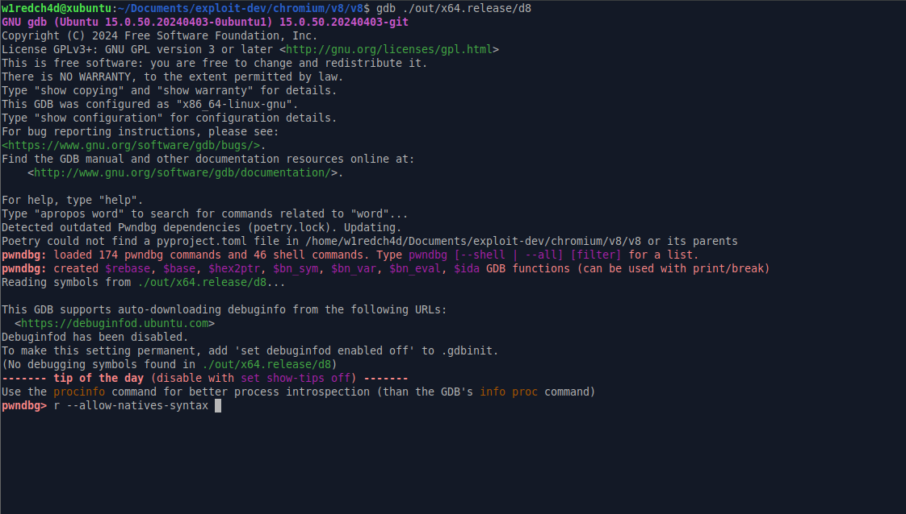
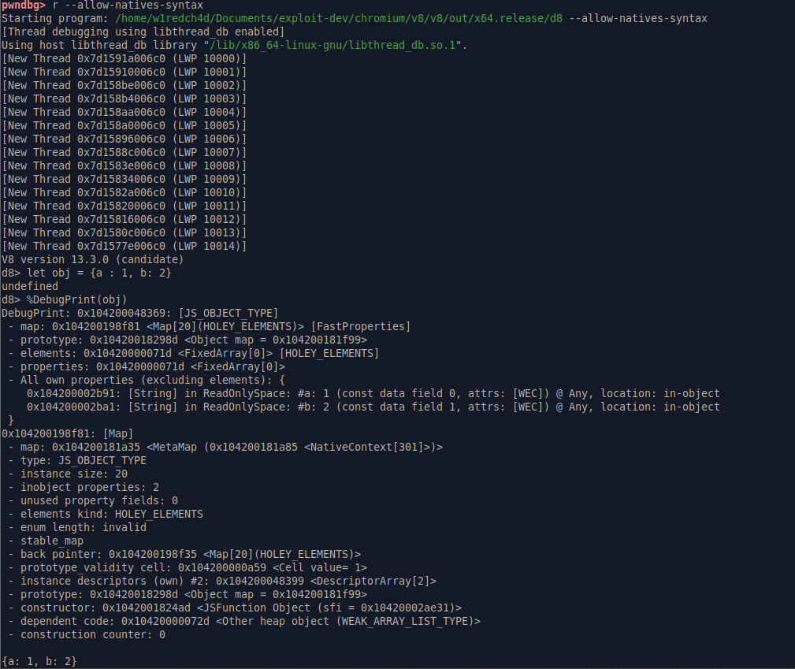
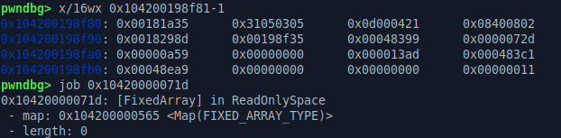

Debugging V8
Debugger Setup
For this blog we will consider the environment to be a debian based linux distro, hence we will use gdb (with pwndbg) to debug v8. first lets install pwndbg by running these commands
git clone https://github.com/pwndbg/pwndbg
cd pwndbg
./setup.sh
now for v8 specific helper functions, the v8 source tree provides a bunch of helpful gdb extensions, include them to your ~/.gdbinit as follows
source /apth/to/pwndbg/gdbinit.py # this should be there after installing pwndbg
source /path/to/v8/tools/gdb-v8-support.py
source /path/to/v8/tools/gdbinit
and you are done
Checking the setup
Lets check our gdb debugging setup for v8 as follows:
gdb /path/to/v8/out/x64.debug/d8
The output should look something as such:

lets see if we can inspect objects:

i will get to the structure on how objects are stored in v8 later on, but first lets see if we can use v8 gdb macros useful for inspection

seems like we can, hence our debug setup is ready to go